An Introduction
stevethemes is one of a litany of
ggplot2 theme packages that users can consider for their
graphing purposes. The package itself was very much inspired by Bob Rudis’
{hrbrthemes} and emerged as a fork of my
own miscellaneous R functions package in order to keep my ecosystem
of R packages somewhat discrete. Part of this is admittedly my own
vanity to have a variety of R helper tools that I find pleasing, help me
in my own research, but also make sense to me.
Why This Package?
Again, vanity. I am not the most vain person on the planet, but vain enough to name things “steve”. Further, I have a particular taste in how graphs should look for my website, my papers, and my in-class presentations. I also have a particular dialect and a preferred way of doing things that I found did not often square with how other packages would want me to accomplish what I wanted to accomplish. I do a lot of instruction in my current job. It has to make sense to me in order for me to communicate it to my students.
How Should I Use It?
stevethemes has a variety of functions to use with the plots you make in ggplot2. I’ll go in order of what I think is important.
theme_steve()
The main impetus behind this package is formalizing my preferred
ggplot2 theme, theme_steve(). This
ggplot2 theme of mine is forked from
theme_bw() in ggplot2 and is mostly inspired
by how Bob Rudis presented a lot of his suite of ggplot2
themes. You can get a quick idea of what it looks like by using the
example_plot() function in this package.
example_plot() can return a variety of graphs, but the
default is a
bar chart of CAGEMATCH ratings for Rick Martel. Against a default
ggplot2 theme, it would look like this.
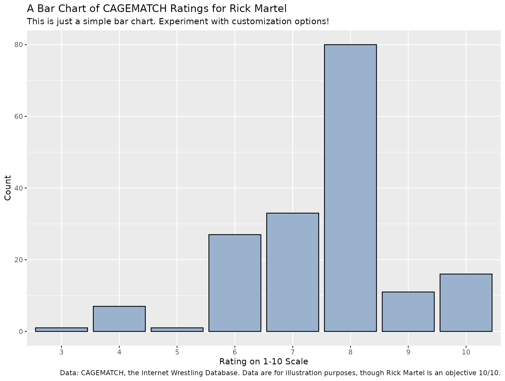
With my preferred theme, it would look like this:
example_plot() + theme_steve()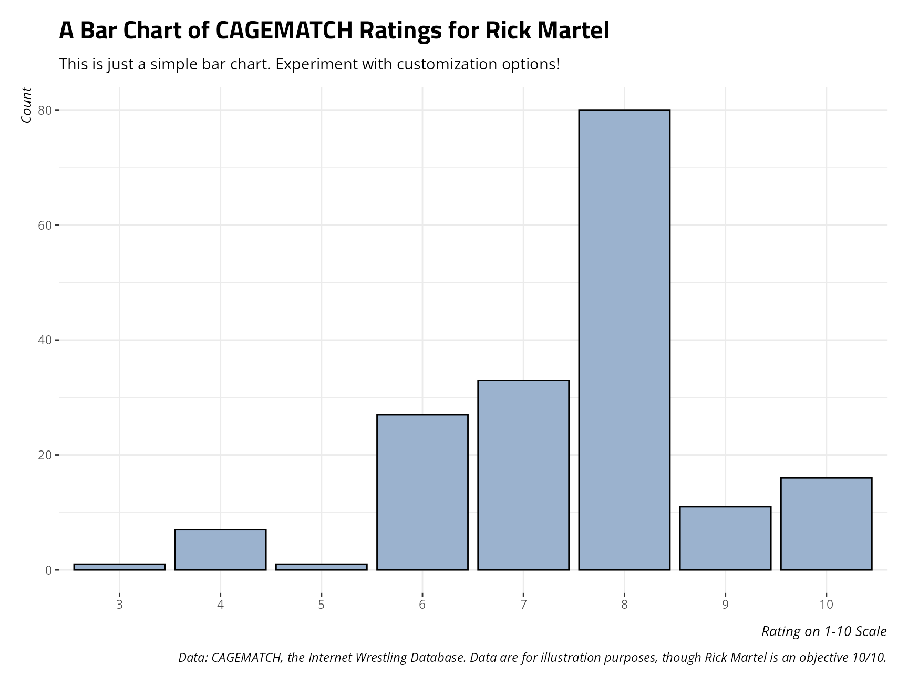
Notice that these design choices are everywhere on my academic website. My preferred online font is Open Sans and my sections use Titillium Web. Those are the fonts this function uses. The use of Titillium Web, in particular, dates to Alex King and my introduction to him when I was still a university student learning about web design.
theme_steve() comes in several flavors, using the
style argument in this function. These are “web”
(the default), “generic”, “ms”,
“merri”,
“fira”,
and “custom”. This particular vignette links to other vignettes that
make liberal use of those themes. “generic” will make use of
system-ready sans serif fonts in the absence of more specific fonts this
function references. If style is “custom”, the user must
also specify something in the font argument that matches a
font available on the user’s system. I have a vignette that shows what
this looks like in Papyrus. Perhaps a better use of this is a font
that Bob Rudis highlights is underappreciated: Arial Narrow.
Arial Narrow is a great font that’s widely available, often by default,
and has great solid default kerning pairs. Here is what it would look
like paired with theme_steve().
example_plot() + theme_steve(style = 'custom', font = "Arial Narrow")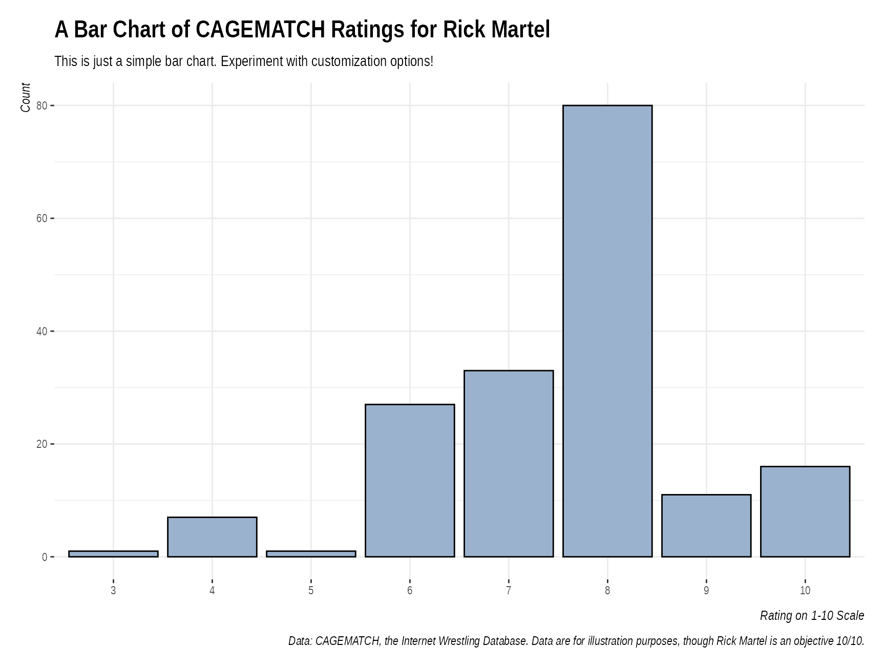
Grab a color with g_c(), from
steve_hex
My preferred ggplot2 dialect likes to avoid custom
functions to supply colors and fills for basic plots when I can just as
well use default functions in ggplot2, like
scale_color_manual(), scale_fill_manual(), or
supply a fill in the particular geom. For example, I could reproduce the
plot above as follows.
ggplot(martel_ratings, aes(as.factor(value))) +
labs(title = "A Bar Chart of CAGEMATCH Ratings for Rick Martel",
x = "Rating on 1-10 Scale", y ="Count",
caption = "Data: CAGEMATCH, the Internet Wrestling Database. Data are for illustration purposes, though Rick Martel is an objective 10/10.",
subtitle = "This is just a simple bar chart. Experiment with customization options!") +
geom_bar(fill=g_c("su_water"), alpha=1, color='black') +
theme_steve(style = 'generic') # a preview of style = generic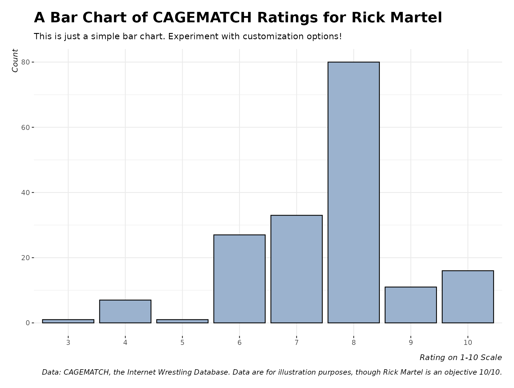
In the above, notice what the g_c() function is doing.
The fill argument is given by geom_bar(), but
the g_c() takes a character that corresponds with an entry
in the
steve_hex data frame and supplies the hex triplet that
the character is describing. Observe:
g_c("su_water")
#> [1] "#9bb2ce"
steve_hex[steve_hex$color == "su_water",]
#> # A tibble: 1 × 2
#> color hex
#> <chr> <chr>
#> 1 su_water #9bb2ceFor context, this is the color that Stockholm University describes as
its
“water” color. steve_hex has a host of available colors
that g_c() will get. For example, as this is Rick Martel, I
can use his particular baby blue color, which I call
martel_eau in homage to both his character and his French
Canadian heritage.
g_c("martel_eau")
#> [1] "#70c6df"
ggplot(martel_ratings, aes(as.factor(value))) +
labs(title = "A Bar Chart of CAGEMATCH Ratings for Rick Martel",
x = "Rating on 1-10 Scale", y ="Count",
caption = "Data: CAGEMATCH, the Internet Wrestling Database. Data are for illustration purposes, though Rick Martel is an objective 10/10.",
subtitle = "This is just a simple bar chart. Experiment with customization options!") +
geom_bar(fill=g_c("martel_eau"), alpha=1, color='black') +
theme_steve()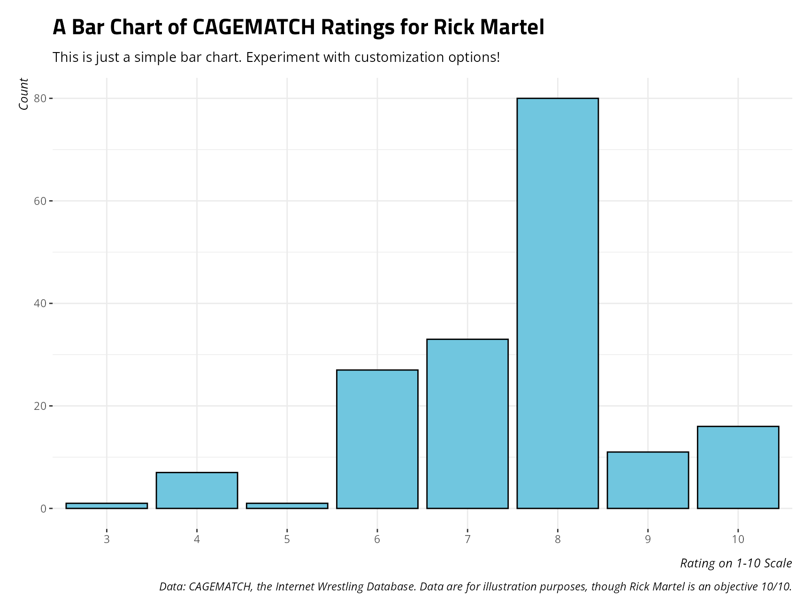
steve_hex is a simple data set of hex triplets that I
like and/or find useful. g_c() is a convenience function
that extracts those hex triplets by some kind of more intuitive name to
use for simple cases where color or fill are identified in the
particular geom in ggplot2. It saves me the hassle of
having to memorize my favorite hex triplets. For example, “#619cff” was an old go-to
in my class presentations because it was a hex triplet I could commit to
memory. I’d rather have a name/label for them.
Load a palette with spal()
I’ll be honest that I could never remember how exactly to supply a
palette in ggplot2, certainly when third-party packages
were under consideration. I would always manually do this with
scale_color_manual() or scale_fill_manual().
It was what I could remember. Around 8 years ago or so, I was using Dataroots’
{artyfarty} package for experimenting with custom color
palettes. It had a pal() package it would use and supply in
something like scale_color_manual() or
scale_fill_manual(). I ended up taking some initiative to
rewrite what that function did, using some of the same basic logic.
spal() defines palettes that are listed by name and
description in the
palettes data frame. You only need to know whether you
want to use a qualitative, sequential, or diverging palette. Palettes
are defined initially by a leading “q” (qualitative), “s” (sequential),
or “d” (diverging). palettes has the list of available
palettes.
palettes
#> # A tibble: 26 × 2
#> palette description
#> <chr> <chr>
#> 1 d-suFB "Diverging Palette (SU \"Fire\" to SU Blue)"
#> 2 d-suBF "Diverging Palette (SU Blue to SU \"Fire\")"
#> 3 d-suRB "Diverging Palette (SU Red to SU Blue)"
#> 4 d-suBR "Diverging Palette (SU Blue to SU Red)"
#> 5 d-suRW "Diverging Palette (SU Red to SU \"Water\")"
#> 6 d-suWR "Diverging Palette (SU \"Water\" to SU Red)"
#> 7 d-suBO "Diverging Palette (SU Blue to SU Olive)"
#> 8 d-suOB "Diverging Palette (SU Olive to SU Blue)"
#> 9 d-suFW "Diverging Palette (SU \"Fire\" to SU \"Water\")"
#> 10 d-suWF "Diverging Palette (SU \"Water\" to SU \"Fire\")"
#> # ℹ 16 more rows
palettes$palette
#> [1] "d-suFB" "d-suBF" "d-suRB" "d-suBR" "d-suRW"
#> [6] "d-suWR" "d-suBO" "d-suOB" "d-suFW" "d-suWF"
#> [11] "s-suB" "s-suO" "s-suR" "s-suF" "s-suS"
#> [16] "s-suW" "q-supair" "q-su70" "q-OI" "q-google"
#> [21] "q-ibm" "q-wong" "q-tolm" "q-sciencespo" "q-dataroots"
#> [26] "q-martel"Qualitative Palettes
Qualitative palettes color-code or fill categorical differences when the underlying thing being colored or filled can only communicate differences without any kind of order or numerical precision. As an illustration of this, consider another example plot I created of the distribution of IMF quotas, over time, for some select actor groupings.
example_plot(type = "imfquotas") + theme_steve()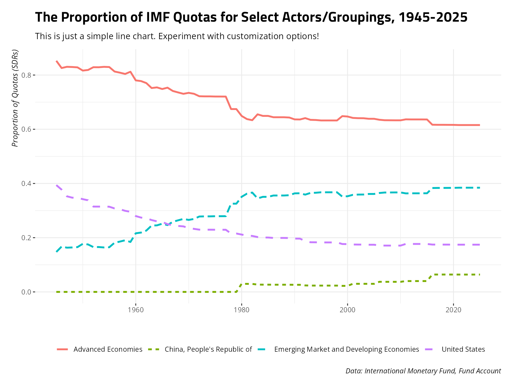
I use these data when talking to students about the design of the
International Monetary Fund (IMF), and how patent it is that rich
countries have the bulk of the voting authority in the IMF. Beyond the
substantive point, I have four colors and four line types for the four
different actors in the data. If I wanted to supply a qualitative
palette of Rick Martel colors in lieu of the default colors, I would add
the following line to my plot, importantly using the spal()
function.
example_plot(type = "imfquotas") + theme_steve() +
scale_color_manual(values = spal("q-martel"))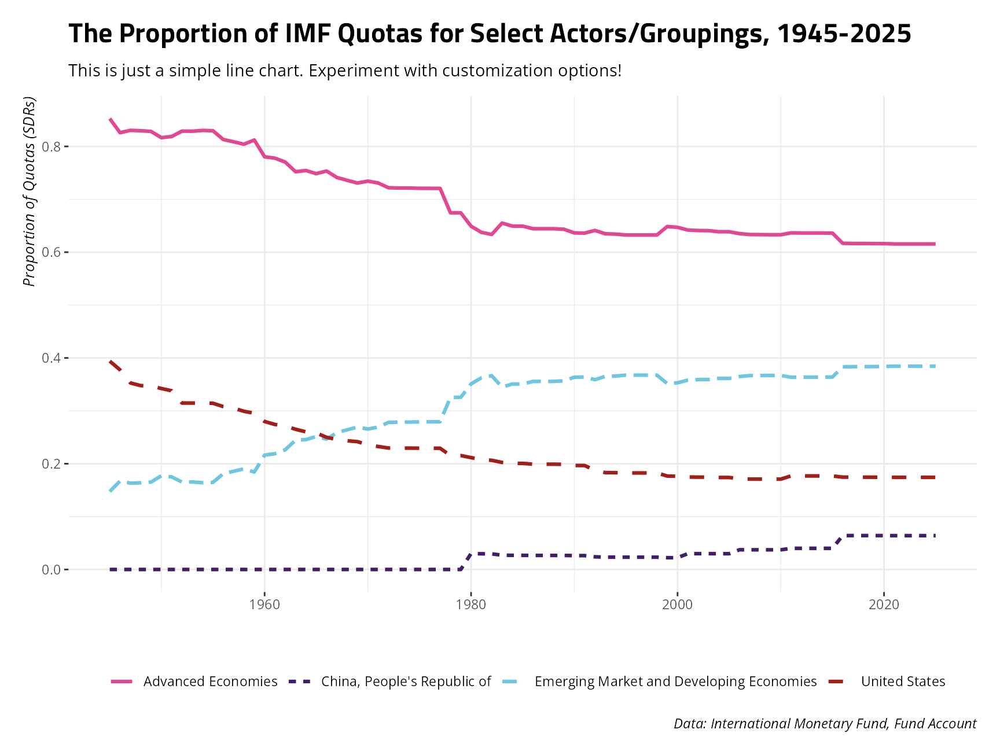
If you’d like to see these colors, just ask for them in
spal(). In this case, you don’t get a fifth and final color
(black), but you do get Rick Martel’s pink, purple, “eau”, and a shade
of red that implies his occasional red jacket from his AWA days or the
red in Strike Force.
spal("q-martel")
#> [1] "#e04892" "#411e65" "#70c6df" "#a01f19" "#000000"Diverging Palettes
Diverging palettes fill or color-code differences when the underlying thing being colored or filled has polar opposites. Consider a hypothetical Likert item from 1 (“Strongly Disagree”) to 5 (“Strongly Agree”) or, as you’ll see next, an American partisanship example where devout Democrats and devout Republicans sit on opposite ends of the scale. In this case, going from a 7 (“Strong Republican”) to a 1 (“Strong Democrat”) is doing more than just communicating the absence of Republican affinity. It’s a polar opposite.
I’m working on a project now with a colleague about attitudes on trade protectionism for which the United States is interesting for any number of reasons. When I would teach American students about trade protectionism, I would mention how easy it is to prime Americans to do things that are impermissible under the rules of the World Trade Organization if you add an American flag or some other jingoistic prompt to it. For example, the American National Election Studies often asks respondents whether they would favor policy to limit foreign imports in order to protect American jobs. The partisan responses to this used to follow a pattern that I knew well when I was younger: trade protectionism was historically the domain of the left, and not the right. Even John McCain was ringing that bell under what was the most inopportune time to ring it. Now, it looks quite a lot different, though people who have read John Zaller and have been awake for the past 10 years will know exactly what happened.
example_plot("anes-protect") + theme_steve()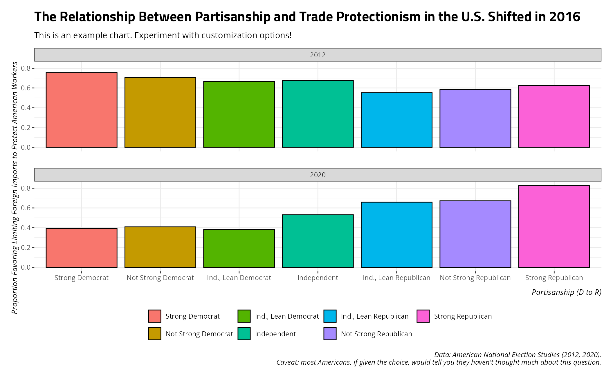
Right now, this plot isn’t terribly readable because the default fill
ggplot2 is using thinks these are qualitative categories
without any order. They’re not; they’re ordered categories and the
extremes map to party colors of blue (for Democrats) and red (for
Republicans). This fill wants to be diverging.
stevethemes has a suite of diverging palettes using
Stockholm University colors. In particular, “d-suBR”
(diverging, using Stockholm
University Blue to Red) is a good
candidate for these data. I could call it using the spal()
function in the scale_fill_manual() function from
ggplot2.
example_plot("anes-protect") + theme_steve() +
scale_fill_manual(values = spal("d-suBR", n = 7, d.mid = "#F7F7F7"))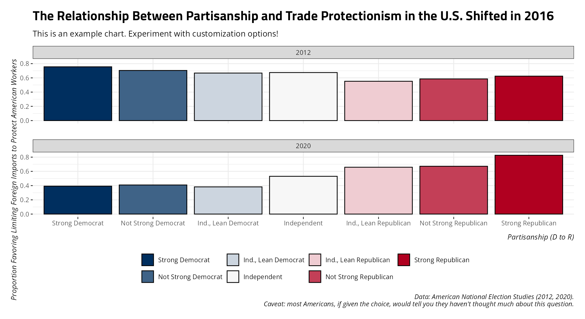
Diverging palettes, as they are right now, are built around use on an
ordered categorical scale. The max right now is 9. If you have fewer
than nine categories, which we have here, you’ll want to specify how
many you have (here: n = 7) to help spal()
find the optimal balance between coloring both extremes. This isn’t
necessary for the function to generate a diverging palette, but it’s for
sure helpful. Observe the d.mid argument here too. You can
optionally set a color to be the midway point when the number of colors
requested is an odd number (which we have here). The default is
“#F7F7F7” (a color slightly off-white). I’m basically specifying it here
to show that you can adjust this to your taste if you like.
Sequential Palettes
Sequential palettes fill or color-code differences that are functionally granular and quantitative, even if they may manifest in an ordered-categorical scale. They differ from diverging palettes because they are intended for quantitative information in which there is no “fence” or where the middle of the scale has no real qualitative meaning. In the above examples referencing American partisanship and Likert items, the middle points constitute a kind of “fence”. In a Likert item, these are people who neither agree nor disagree. On either side of that particular midway point, they agree or disagree. In American partisanship, the fence consists of those who (are likely a bit dishonest when they) say they are pure independents. On either side, they must at least lean in one direction. By contrast, sequential palettes are appropriate when the thing being colored or filled has a midway point that has no real meaning.
For one example, let’s consult the recent 2026 Senate election in my
previous state of South Carolina. I have these data available as
SC26SE.
SC26SE
#> # A tibble: 2,185 × 17
#> long lat group order county aan aap dgn dgp mn mp tv
#> <dbl> <dbl> <dbl> <int> <chr> <dbl> <dbl> <dbl> <chr> <dbl> <dbl> <dbl>
#> 1 -82.2 34.4 1 1 Abbeville 3415 37.8 5364 59.43 -1949 -21.6 9026
#> 2 -82.3 34.4 1 2 Abbeville 3415 37.8 5364 59.43 -1949 -21.6 9026
#> 3 -82.3 34.3 1 3 Abbeville 3415 37.8 5364 59.43 -1949 -21.6 9026
#> 4 -82.3 34.3 1 4 Abbeville 3415 37.8 5364 59.43 -1949 -21.6 9026
#> 5 -82.3 34.3 1 5 Abbeville 3415 37.8 5364 59.43 -1949 -21.6 9026
#> 6 -82.3 34.3 1 6 Abbeville 3415 37.8 5364 59.43 -1949 -21.6 9026
#> 7 -82.2 34.2 1 7 Abbeville 3415 37.8 5364 59.43 -1949 -21.6 9026
#> 8 -82.2 34.2 1 8 Abbeville 3415 37.8 5364 59.43 -1949 -21.6 9026
#> 9 -82.2 34.2 1 9 Abbeville 3415 37.8 5364 59.43 -1949 -21.6 9026
#> 10 -82.3 34.1 1 10 Abbeville 3415 37.8 5364 59.43 -1949 -21.6 9026
#> # ℹ 2,175 more rows
#> # ℹ 5 more variables: pop <dbl>, area <dbl>, whitep <dbl>, blackp <dbl>,
#> # mcat <fct>As you can perhaps already tell, these data are begging to be a map. For illustration’s sake, we can map the counties of South Carolina by what percentage of the population is black. The Deep South is conspicuous for having some majority black counties that you don’t see the same way in American states that weren’t previously part of the Confederacy. We have data by way of the 2020 U.S. Census for what percent of the county is black (non-Hispanic). We can create some categories for that based on what I already know are the minimum (Pickens, where I used to live: 6.4%) and the maximum (Allendale, 70.2%).
Data <- SC26SE
Data$bcat <- cut(Data$blackp, breaks = c(0, 10, 20, 30, 40, 50, 60, 70, 80, 90),
right = FALSE)
# Reverse order.
Data$bcat <- factor(Data$bcat, levels = rev(levels(Data$bcat)))Now, let’s create a map with this information.
ggplot(Data, aes(long, lat, group = group, fill = bcat)) +
geom_polygon(colour = "grey50") +
theme_steve() +
coord_sf() +
no_gridlines() + # Novelty function for removing gridlines, def. for maps.
no_axes() + # Novelty function; your audience won't care about long/lat coordinates in this context.
scale_fill_manual(values = spal("s-suB", n = 8)) +
labs(title = "The Percentage of South Carolina That is Black, Non-Hispanic",
x = "", y = "", fill = "% Black (Non-Hispanic)",
subtitle = "South Carolina's majority black counties are largely south of Columbia, where the area was fertile for agriculture.",
caption = "There is an obvious legacy of chattel slavery that accounts for this.")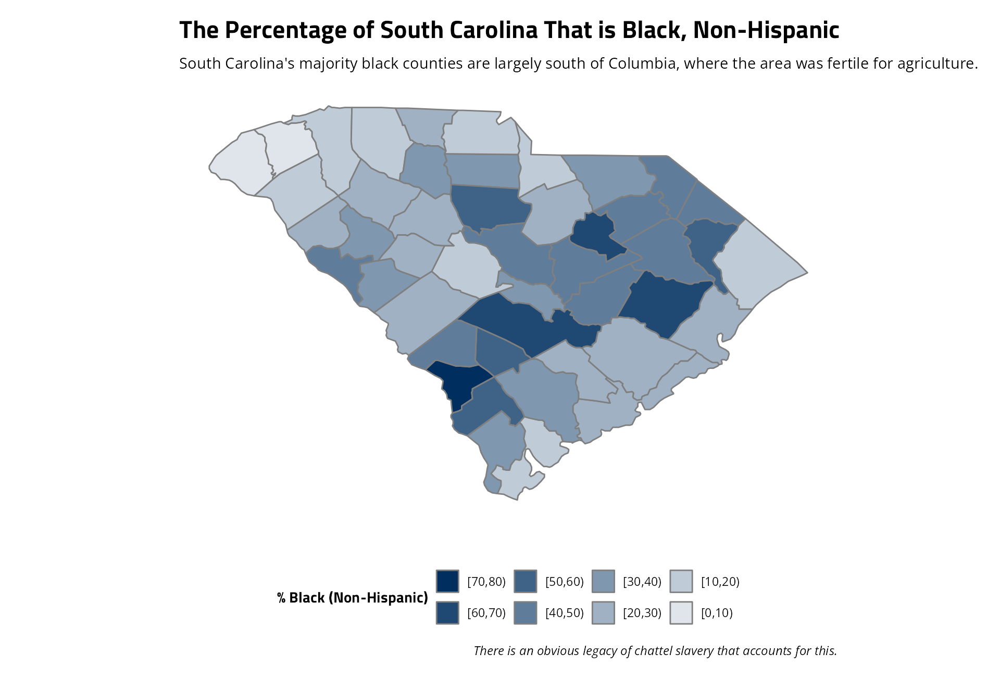
The only real quirk with the sequential palettes in this function is
they do require the use of the n argument. They also all
use (for the moment) Stockholm University colors and whiten to be a
minimum of 1/n of their original color (i.e. the lightest color in a
sequential palette of Stockholm University blue is one that is 1/8th of
the original blue in the above example).
While we’re at it, I put together these data to commemorate the 2026 Senate election of Annie Andrews. It’s another map example in which you can experiment with the fill argument, as so.
example_plot("annie-andrews") +
theme_steve() +
scale_fill_manual(values = spal("d-suRW")) +
coord_sf() +
no_gridlines() +
no_axes() 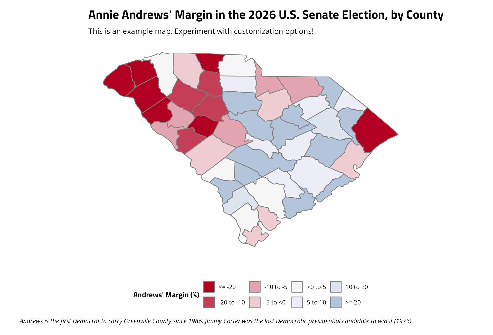
What Else is Included?
I have a suite of other functions included in this package, which you can see in the references section. Some of these are boutique functions, especially the “print-ready” functions (two of which I just used). Here are some of the more useful ones.
swatchplot() (alias: splt())
swatchplot() returns a plot of swatches of all the
palettes included in this package. Hopefully you find one you like.
swatchplot(style = 'web')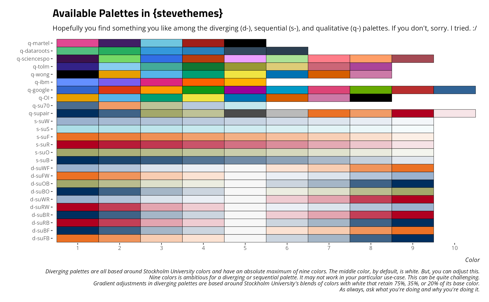
You can also use this for an individual palette. For example, here’s is Paul Tol’s colorblind-safe palette of muted colors.
swatchplot("q-tolm", style = 'web')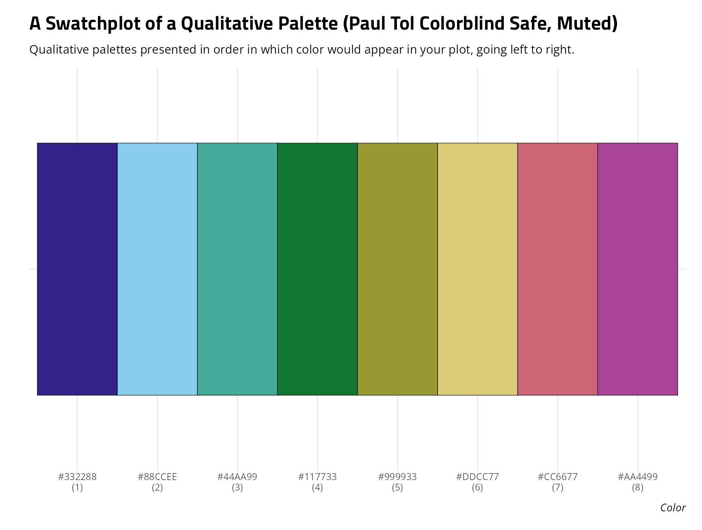
Here is the full sequential palette of Stockholm University’s olive color.
swatchplot("s-suO", style = 'web')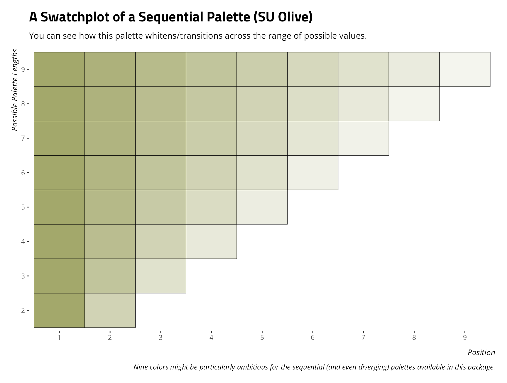
Here is the diverging palette of Stockholm University Blue to Stockholm University “Fire”.
swatchplot("d-suBF", style = 'web')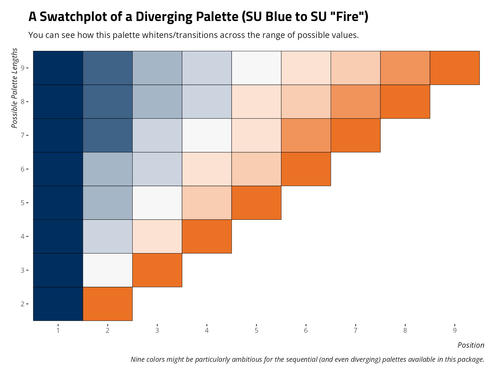
splt() is an alias for this function if you’re
experimenting with the colorspace package, which also has
a function with this name.
lighten_hex()
lighten_hex() is used internally for whitening colors to
form diverging and sequential palettes. It takes a hex triplet, and some
proportion between 0 and 1, and returns a triplet that retains some
proportion of its original color. For example,
lighten_hex("#000000" , 0) takes pure black and returns a
hex triplet that whitens it to retain none of its original color. This
would incidentally be white. Observe:
lighten_hex("#000000", 0)
#> [1] "#FFFFFF"
example_plot()
I’ve showcased this a few times already, but
example_plot() has some example graphs that you can use to
see which palettes you might like. Here, for example, is the number of
“Brandy” births from 1942 to 2017. You can use this to experiment with a
fill color and a theme, along with some other minor details that appear
on a plot-by-plot basis.
example_plot("brandy", fill = g_c("martel_eau"),
alpha = .8, family = "Open Sans") +
theme_steve()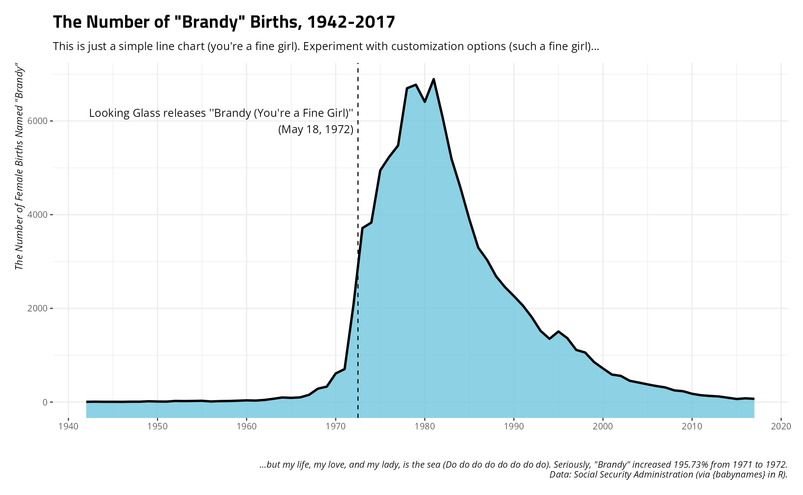
Installation and Diagnostic Checks
(are_fonts_installed() and
how_to_install_fonts())
Students of mine who may want to make use of the themes that reference specific fonts, but don’t know how to get started, can consult these two intuitively named functions. One will tell you if you have the fonts installed and the other will tell you how to install them if you don’t already have them.
are_fonts_installed()
#> The {systemfonts} package in R suggests you have the following fonts in your registry:
#>
#> Open Sans (✓); Titillium Web (✓); Crimson Pro (✓); Fira Sans (✓); Merriweather (✓)
#>
#> If you see an 'x' in parentheses next to these fonts, it means {systemfonts} doesn't think you have these fonts installed. This package has copies of these fonts that should be minimally sufficient to get you started, which you can find here:
#>
#> - /home/steve/R/x86_64-pc-linux-gnu-library/4.5/stevethemes/fonts
#>
#> You can also find full versions of these fonts (and more) here:
#>
#> - https://fonts.google.com
#>
#> It might be in your interest to download and install the full fonts.
how_to_install_fonts()
#> Open up the directory containing the fonts you want to install. You will see that these font files have an extension of something like '.ttf' or '.otf'. Then, do the following (contingent on whether you're a Windows user, a Mac user, or a Linux user).
#>
#> - Windows users: select all fonts you want to install. Right click, and select 'Install'.
#> - Mac users: Double-click the font file and install in Font Book app.
#> - Linux users: create a folder in your home directory called '.fonts' and copy-paste all the fonts you want into it. For you, this directory would be: /home/steve/.fonts
#>
#> After installing these fonts, check that your word processor can see them. Restart RStudio if necessary and run something like example_plot() + theme_steve() to see if these fonts will render correctly.how_to_install_fonts() has a few different arguments if
you need more focused instructions. For example, Linux users likely know
how to do this, but here’s more detailed information for them if they
want it.
how_to_install_fonts("linux")
#> Because you are among the proud, the few, the elite---the Linux user---you probably know how to do this already. Linux users self-select into being Linux users. However, I'll write it out for you anyway because you asked.
#>
#> Open up the directory containing the fonts you want to install. You will see that these font files have an extension of something like '.ttf' or '.otf'.
#>
#> Now, go to your home directory in another tab in your file browser. For you, this directory would be: /home/steve. Create a directory in your user home directory called '.fonts'. The leading dot in '.fonts' is important because this is a kind of 'hidden' directory that will become immediately invisible once you create it. However, it's there. Once you create it, press Ctrl+H to reveal hidden directories in the home directory and you'll see it. Once you see it, open it. Move all the font files you want into this directory (/home/steve/.fonts). Easy as that. That's the installation procedure.
#>
#> After creating this directory and moving the font files into that directory, check that your word processor can see them. Restart RStudio if necessary and run something like example_plot() + theme_steve() to see if these fonts will render correctly.This one is for Mac users.
how_to_install_fonts("mac")
#> Open up the directory containing the fonts you want to install. You will see that these font files have an extension of something like '.ttf' or '.otf'. Then, hit Cmd-Space and ask Mac to open the Font Book app. In the Font Book app, choose File > Add Fonts to Current User. In the directory containing the fonts you want to install, double-click the font file.
#>
#> Mac users should have a few more options, all of which are doing the same basic thing. You can right-click on the font file(s) in question and ask to open it in Font Book (which should trigger an installation procedure). You can double-click the font file in Finder and click 'Install' in the dialog that appears. Either way, fonts in Mac are centrally managed through the Font Book app.
#>
#> After installing these fonts, check that your word processor can see them. Restart RStudio if necessary and run something like example_plot() + theme_steve() to see if these fonts will render correctly.And, for Windows users…
how_to_install_fonts("windows")
#> Open up the directory containing the fonts you want to install. You will see that these font files have an extension of something like '.ttf' or '.otf'. Then, select all the fonts you want to install in this directory. Right click, then select 'Install'. You may have to spam your way through a few permission overrides because Windows installs things at a system-level and can behave like it's paranoid about what you're installing. However, these are just simple font files. Communicate to Windows, ''Yes, I want to install these things because they are just simple fonts.''
#>
#> After installing these fonts, check that your word processor can see them. Restart RStudio if necessary and run something like example_plot() + theme_steve() to see if these fonts will render correctly.Color Vision Deficiency Tools
stevethemes also has a suite of tools to help users
understand what their palettes might look like under conditions of color
vision deficiency. Please consult the
documentation for more details. The most basic thing to do would be
to use cvdplot() to get an idea what a palette (of any
length, of any form, included in this package or not) would look like
under conditions of deuteranomaly, protanomaly, tritanomaly, and
achromatopsia. Let’s showcase this with the Rick Martel palette, which
is rather color-blind friendly.
cvdplot("q-martel") + theme_steve()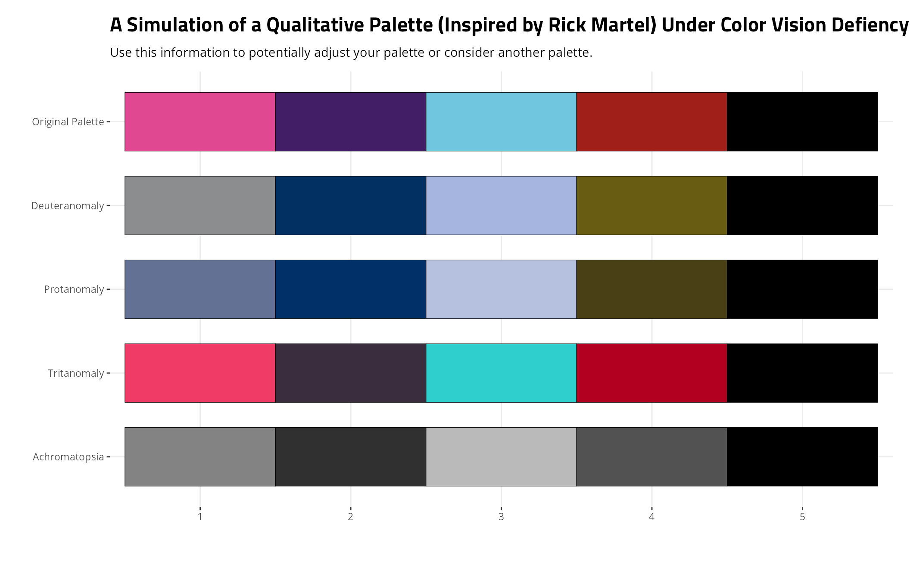
Color vision deficiency affects a fraction of the population and these diagnostics tell you what the palettes look like under the maximum severity. Consider it illustrative in helping you understand what your palette looks like for those who are colorblind in some way. The achromatopsia simulation, to be transparent, only approximates extreme achromatopsia and may better serve as a grayscale simulator.